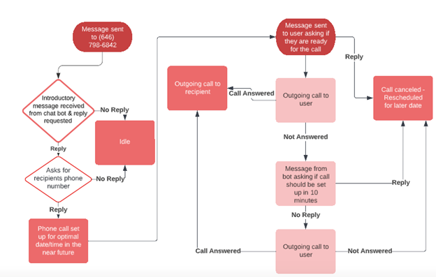

Sample Conversation
Text Bot Functionality

A Task-by-Task Explanation
The workflow starts with a message being sent to the bot's number. The user will receive a prompt, saying the message was received and follows up with asking if the user wants to continue. After a user response, the bot asks for the phone number it should use to connect with the user. This text conversation ends and the bot adds this call to its caller queue, where it will begin to find an optimal time for the call to take place the next day.
The next weekday, after finding an optimal time to set up a call, the bot will randomly reach out to the user and ask if the suer is still ready for a call, saying to respond if now is not a good time. If there is a response, the call will be canceled and thrown back into the queue for the next day. Otherwise, after 10 minutes, a call will be initiated with the bot and the user. If the user picks up the phone, then a call with the bot and the other party will initiate. If the user does not pick up, then the bot will send another text, trying the same process once again 10 minutes later. Once a call between the bot and the second party initiates, it will act as though the second party will receive a call from the user.
Text Bot Functionality